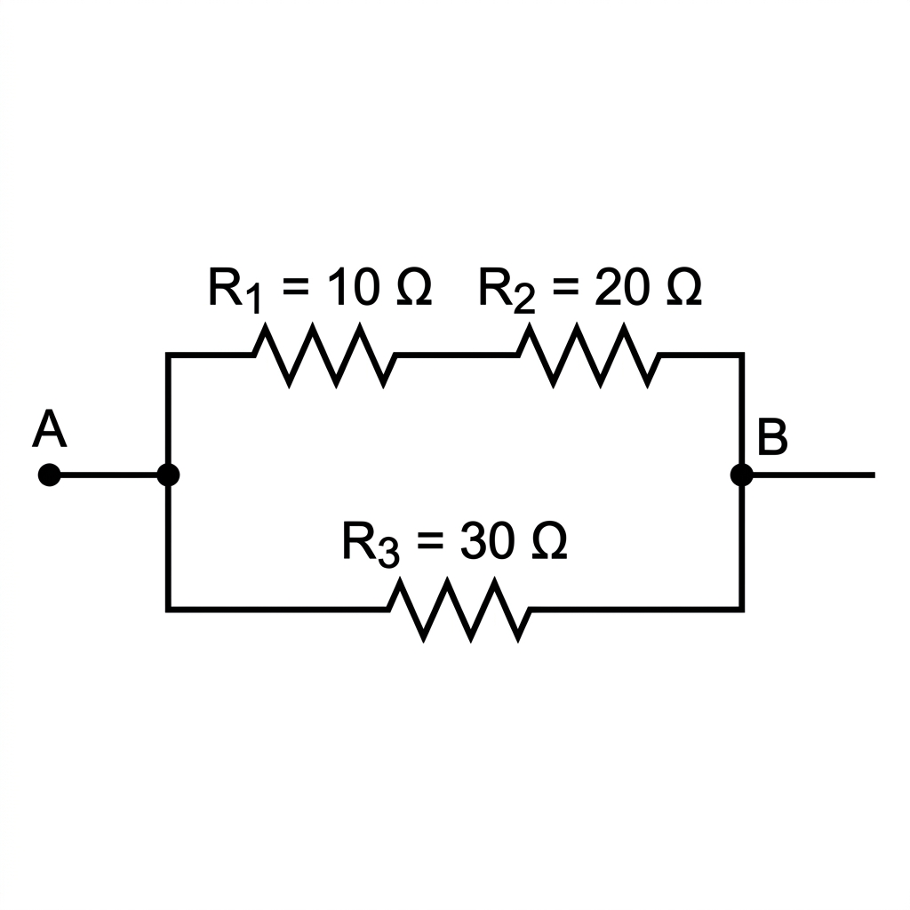
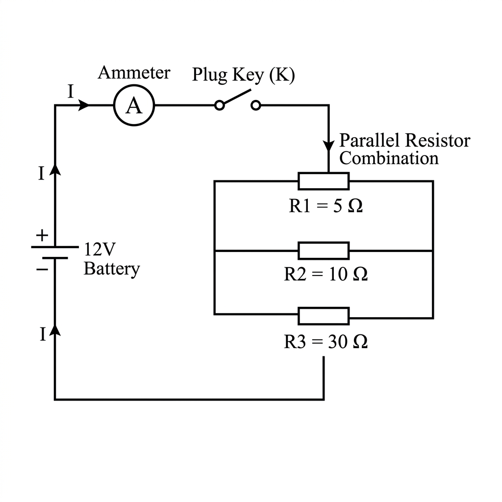
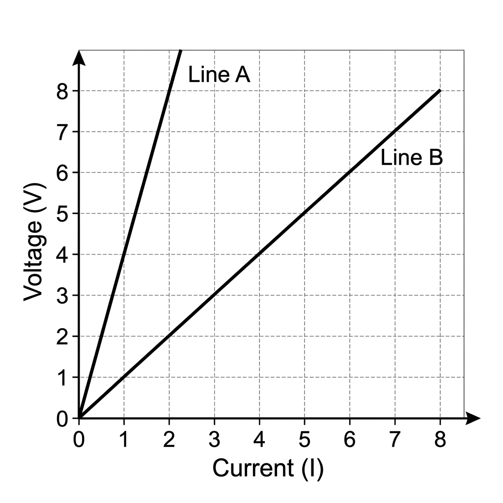

1.
Define electric current. What is its SI unit? Define $1\text{ Ampere}$
mathematically and theoretically.
2.
Calculate the number of electrons constituting one coulomb of charge. (Given:
Charge on one electron, $e = 1.6 \times 10^{-19}\text{ C}$).
3.
A current of $0.5\text{ A}$ is drawn by a filament of an electric bulb for
$10\text{ minutes}$. Find the amount of electric charge that flows through the circuit.
4.
Distinguish between conventional direction of electric current and the direction
of flow of electrons in a closed circuit.
5.
Define electric potential difference between two points in an electric circuit
carrying some current. State its SI unit and define it.
6.
How much work is done in moving a charge of $2\text{ C}$ across two points having
a potential difference of $12\text{ V}$?
7.
Name the device that helps to maintain a potential difference across a conductor.
Explain briefly how it does so.
8.
What is meant by an electric circuit? Differentiate between an open circuit and a
closed circuit.
9.
Identify the electrical components represented by the following standard symbols:
- A straight line with a zigzag pattern.
- A circle with 'A' inside it.
- A combination of long and short parallel lines connected in series.
- A circle with a cross (X) inside it.
10.
How are ammeters and voltmeters connected in a circuit? Justify your answer based
on their ideal resistance.
11.
State Ohm's law. Express it mathematically. What are the necessary conditions for
Ohm's law to be applicable?
12.
Draw a V-I (Voltage-Current) graph for an ohmic conductor. What physical quantity
is represented by the slope of this graph?
13.
Define resistance. What is the cause of resistance in a metallic conductor?
14.
The potential difference between the terminals of an electric heater is $60\text{
V}$ when it draws a current of $4\text{ A}$ from the source. What current will the heater draw if
the potential difference is increased to $120\text{ V}$?
15.
On what factors does the resistance of a cylindrical conductor depend? Write the
mathematical expression relating resistance with these factors.
16.
Define electrical resistivity of the material of a conductor. What is its SI
unit? Does it depend on the length or thickness of the wire?
17.
A given wire of resistance $R$ is stretched to double its original length.
Calculate the new resistance of the wire in terms of $R$.
18.
A wire of given material having length $l$ and area of cross-section $A$ has a
resistance of $4\text{ }\Omega$. What would be the resistance of another wire of the same material
having length $l/2$ and area of cross-section $2A$?
19.
Why are alloys commonly used in electrical heating devices like toasters and
electric irons instead of pure metals? Give two reasons.
20.
Resistance of a metal wire of length $1\text{ m}$ is $26\text{ }\Omega$ at
$20^\circ\text{C}$. If the diameter of the wire is $0.3\text{ mm}$, what will be the resistivity of
the metal at that temperature? (Take $\pi = 3.14$).
21.
Derive the expression for the equivalent resistance when three resistors $R_1$,
$R_2$, and $R_3$ are connected in series.
22.
Derive the expression for the equivalent resistance when three resistors $R_1$,
$R_2$, and $R_3$ are connected in parallel.
23.
State three advantages of connecting electrical appliances in parallel over
series combinations in household circuits.
24.
What is the (a) highest, (b) lowest total resistance that can be secured by
combinations of four coils of resistance $4\text{ }\Omega$, $8\text{ }\Omega$, $12\text{ }\Omega$,
$24\text{ }\Omega$?
25.
Show how you would connect three resistors, each of resistance $6\text{ }\Omega$,
so that the combination has a resistance of: (i) $9\text{ }\Omega$, (ii) $4\text{ }\Omega$.
26.Calculate the equivalent resistance of the given circuit between points A and B.

27.In the given circuit diagram, calculate: (i) Total resistance of the circuit, (ii) Total current flowing in the circuit, (iii) Current through the $5\text{ }\Omega$ resistor.

28.Two identical bulbs are connected in series. What happens to the brightness of the remaining bulb if one of the bulbs gets fused? What would happen if they were connected in parallel?
29.A wire of resistance $20\text{ }\Omega$ is bent in the form of a closed circle. What is the effective resistance between the two points at the ends of any diameter of the circle?
30.If $n$ resistors, each of resistance $R$, are first connected in series and then in parallel, what is the ratio of their equivalent resistance in series to that in parallel ($R_s / R_p$)?
31.State Joule's law of heating mathematically and theoretically.
32.Derive the formula for the heat produced $H$ in a resistor of resistance $R$ carrying current $I$ for time $t$. ($H = I^2Rt$).
33.Why is tungsten used almost exclusively for filament of electric lamps? Give two properties that make it suitable.
34.Why are electric bulbs usually filled with chemically inactive gases like nitrogen and argon?
35.What is an electric fuse? Explain its working principle. Why is a fuse placed in series with the device?
36.An electric iron of resistance $20\text{ }\Omega$ takes a current of $5\text{ A}$. Calculate the heat developed in $30\text{ seconds}$.
37.$100\text{ J}$ of heat is produced each second in a $4\text{ }\Omega$ resistance. Find the potential difference across the resistor.
38.Compute the heat generated while transferring $96000\text{ C}$ of charge in one hour through a potential difference of $50\text{ V}$.
39.Why does the cord of an electric heater not glow while the heating element does?
40.Two conducting wires of the same material and of equal lengths and equal diameters are first connected in series and then in parallel in a circuit across the same potential difference. What is the ratio of heat produced in series and parallel combinations?
41.Define electric power. What is its SI unit?
42.Derive the three formulas for electric power: $P = VI$, $P = I^2R$, and $P = V^2/R$. Which formula is best used for series circuits and which for parallel?
43.What is the commercial unit of electrical energy? Establish the relationship between this unit and Joules (SI unit of energy).
44.An electric bulb is rated $220\text{ V}$ and $100\text{ W}$. What is the resistance of the bulb? When it is operated on $110\text{ V}$, what will be the power consumed?
45.An electric refrigerator rated $400\text{ W}$ operates $8\text{ hours/day}$. What is the cost of the energy to operate it for $30\text{ days}$ at Rs $3.00$ per $\text{kWh}$?
46.Several electric bulbs designed to be used on a $220\text{ V}$ electric supply line are rated $10\text{ W}$. How many lamps can be connected in parallel with each other across the two wires of $220\text{ V}$ line if the maximum allowable current is $5\text{ A}$?
47.Two bulbs are rated $100\text{ W}, 220\text{ V}$ and $60\text{ W}, 220\text{ V}$. If they are connected in series across a $220\text{ V}$ supply, which bulb will glow brighter and why?
48.Compare the power used in the $2\text{ }\Omega$ resistor in each of the following circuits: (i) a $6\text{ V}$ battery in series with $1\text{ }\Omega$ and $2\text{ }\Omega$ resistors, and (ii) a $4\text{ V}$ battery in parallel with $12\text{ }\Omega$ and $2\text{ }\Omega$ resistors.
Arnav is performing Ohm's law experiment in the laboratory. He connects a battery, a switch, an ammeter, a voltmeter, and a resistor, but his teacher points out that his circuit will not work because two devices are connected incorrectly.
49.
Based on the case above:
- Identify the specific mistake in Arnav's circuit diagram.
- What will happen to the current in the circuit due to this mistake? Explain based on the
resistance of the devices.
- Draw the correct circuit diagram.
During a festival, Parul connected an electric oven ($2000\text{ W}$), an iron
($1000\text{ W}$), and a room heater ($1500\text{ W}$) all to the same power strip plugged into a single
$220\text{ V}$ socket in her room. The socket is protected by a $15\text{ A}$ fuse. Suddenly, the power
went out in her room.
50.
Based on the case above:
- Calculate the total power drawn by the appliances.
- Calculate the total current drawn from the mains.
- Explain scientifically why the power went out and name the phenomenon.
Ananya plotted V-I graphs for two metallic wires A and B made of the same material
and having the same length. She observed that line A has a steeper slope than line B.

51.
Based on the graph:
- Which wire has a higher resistance? Justify your answer using Ohm's law.
- Which wire is thicker (has a larger cross-sectional area)? Explain the relationship.
- If wire A and B were connected in series, and a new graph was plotted, where would its line
lie relative to A and B?
Direction: In the following questions, a statement of Assertion (A) is followed by a
statement of Reason (R). Choose the correct option:
(a) Both A and R are true, and R is the correct
explanation of A.
(b) Both A and R are true, but R is not the correct explanation of A.
(c) A is
true, but R is false.
(d) A is false, but R is true.
52.
Assertion (A): Alloys are commonly used in electrical heating
devices like toasters.
Reason (R): Alloys do not oxidize (burn) readily at high
temperatures and generally have higher resistivity than their constituent metals.
53.
Assertion (A): A voltmeter is always connected in parallel
across the points where potential difference is to be measured.
Reason (R): A
voltmeter has very low resistance.
54.
Assertion (A): In a series circuit, the current is constant
throughout the circuit.
Reason (R): In a series circuit, the equivalent
resistance is lower than the lowest individual resistance.
55.
Assertion (A): Tungsten metal is used for making filaments of
incandescent lamps.
Reason (R): The melting point of tungsten is very low.
56.
A wire of resistance $R$ is cut into five equal parts. These parts are then
connected in parallel. If the equivalent resistance of this combination is $R'$, calculate the ratio
$R / R'$.
57.
How many $176\text{ }\Omega$ resistors (in parallel) are required to carry
$5\text{ A}$ on a $220\text{ V}$ line?
58.
Show that if a resistor $R$ is connected to a battery of voltage $V$, the heat
dissipated $H$ over time $t$ can be minimized by increasing the resistance. However, if the same
resistor is connected in series with other resistors, does increasing its resistance decrease its
heat dissipation? Explain using the appropriate power formulas.
59.
Naitik sets up a circuit with a $12\text{ V}$ battery connected in series to a
$4\text{ }\Omega$ resistor and a parallel combination of two $8\text{ }\Omega$ resistors. Calculate:
(i) Total resistance of the circuit, (ii) Voltage drop across the $4\text{ }\Omega$ resistor, (iii)
Heat dissipated by the parallel combination in $10\text{ seconds}$.
60.
Explain why electrons in a conductor do not travel at the speed of light when a
switch is turned on, yet the electric bulb lights up almost instantly.
 ← Back to Practice Arena
← Back to Practice Arena